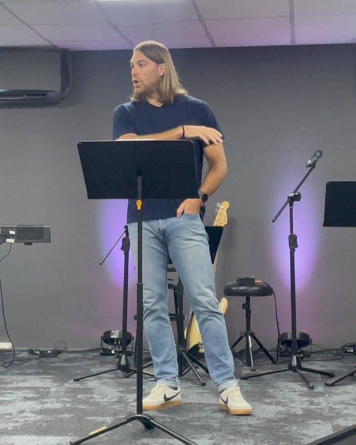

An English-speaking church in Panama City.
People from more than 20 nations, most of whom came here from somewhere else. Meeting in Panama City since 2012, and led by Nate and Jendi Korpi since 2017.

How LifeBridge started
- 2012
Planted for Panama City’s English-speaking community
Glenn and Susan Herschberger started LifeBridge with a leadership team.
- 2013
The leadership team carries it on
The Herschbergers returned to the United States to serve with Converge.
- 2017
Nate and Jendi Korpi arrive
They moved to Panama and became lead pastors.
- Today
More than 20 nations on a Sunday
At the World Trade Center, Floor 2.
Most of us came from somewhere else
Many of us are expats, working professionals, families and retirees. Some are here for a few years, some for good.
Many of us arrived in Panama not knowing anyone. That’s a big part of why this church exists.

Our mission: making heaven more crowded.
What we believe
The Bible is at the centre of how we relate to God and to each other. Committed Christians can disagree on some things. These are the essentials.
- God
- One God, eternal and good, who made everything. God exists as three persons, Father, Son and Holy Spirit, and wants a real relationship with people.
- Jesus
- Fully God and fully human. He lived without sin, died on the cross for our sins, rose from the dead, and will return.
- The Holy Spirit
- Lives in everyone who trusts Jesus. Teaches, comforts and gives strength, and brings believers together.
- The Bible
- God’s word: true, trustworthy, and the final authority on what we believe and how we live. Its message should be told in plain language people understand.
- Salvation
- Sin breaks our relationship with God. Jesus came to restore it. Salvation is a gift, received by grace through faith in Jesus alone, not earned by good works.
Who leads LifeBridge
- Nate Korpi
- Lead Pastor
- Jendi Korpi
- Communications Lead
- Zach Burtard
- Finance Team Lead

Who we’re connected to
- Converge
- A movement of more than 1,300 churches helping people meet, know and follow Jesus. converge.org
- International Baptist Convention
- A network of more than 60 international, English-speaking churches around the world. LifeBridge is part of its Latin American region. ibc-churches.org
Still working out what you believe? Sunday is for you too.
Some people here have believed their whole lives. Some are just starting to ask. Everyone is welcome.
Plan your visit